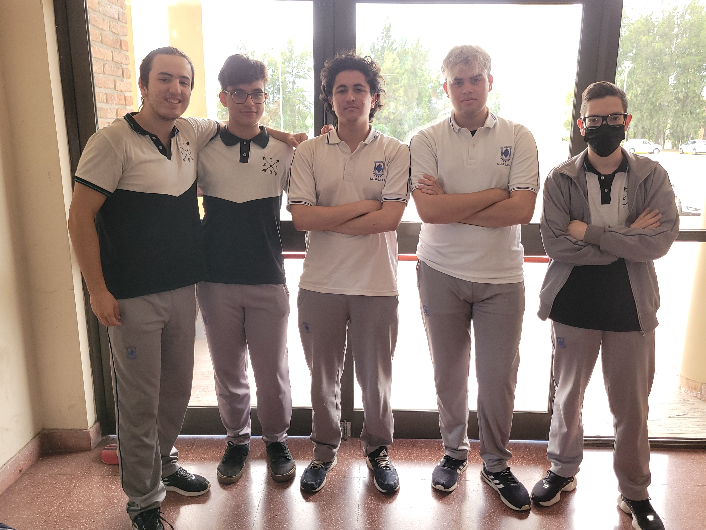

Sobre Nosotros
Somos un grupo de compañe@s. Nos conocemos desde que empezamos la secundaria, en la Escuela Tegnológica Ingeniero Giúdici. Nos hacemos llamar internamente los 'pibes'.

Sebastian Sanchez Bentolila
- Edad: 17 años
- Carrera a seguir: Ciencia de Datos (UNAB)
- Hobbies: Gym, leer, aprender, programar y andar en bici
Lisandro Giani
- Edad: 18 años
- Carrera a seguir: Ingenieria Forestal (UNLP)
- Hobbies: Videojuegos, leer y estudiar idiomas
Luciano Lamberti
- Edad: 17 años
- Carrera a seguir: Arquitectura (UADE)
- Hobbies: Videojuegos, dibujo y leer
Uriel Lugo
- Edad: 17 años
- Carrera a seguir: Administración de empresas (UNLZ)
- Hobbies: Videojuegos, leer, estudiar idiomas, voley
Lucas Paz
- Edad: 17 años
- Carrera a seguir: Ingenieria Industrial (UNLZ)
- Hobbies: Videojuegos, estudiar y leer